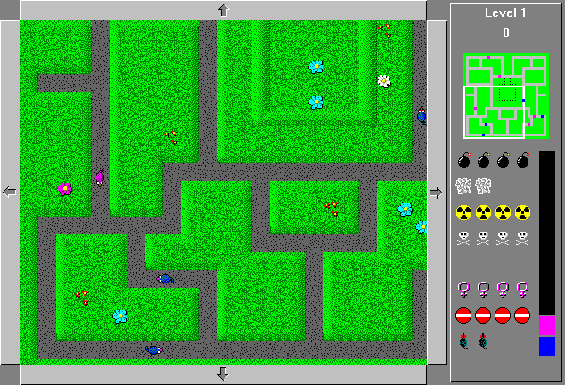

• 互动娱乐
Rats!
忽然想到以前玩过一个 Windows 下的小游戏，在 Flying Juicer 的提醒下，通过名字找到了作品和作者 Sean O’Connor 的网站。

游戏的名字叫 Rats!，玩法很简单：
地图上有到处乱窜的老鼠，公老鼠和母老鼠相遇后会交配生下更多老鼠。
玩家可以在地图上放置多种工具，如定时炸弹炸弹、毒药、毒烟、路障、机器老鼠和剥夺生殖能力的放射源，用于控制老鼠的数量。
需要在保证老鼠的总数不超过上限的前提下，尽量多得分。
第一个地图免费，后面的需要付费解锁。
这个游戏如果一上来杀死所有老鼠，很容易但很无趣。
最有意思的地方在于老鼠呈几何级数繁殖时，能够及时控制住鼠口上限。
满屏幕都是交配和下崽儿的老鼠，配合销魂的呻吟和啵啵啵的下崽儿声音，堪称作死边缘的乐趣。
Rat! 最早在94年就发布了，现在还能够找到和玩到原版，有种考古发现宝藏的惊喜。
从 Sean O’Connor 的作品集发现，以前在手机上玩过的 Slay 也是他的作品。
另外，他还写了 Firefight，看上去有点像 Close Combat 的风格，带有地图编辑器。
有推友搭车求问其他的游戏，于是找到了曾经风靡一时的《血腥大地/Crimsonland》——一款顶视图风格的射击游戏，在汹涌如潮的丧尸和怪物包围下不断开火和升级。
才知道它已经出了重制版，在多个游戏平台发布。只是看游戏评论，不少老玩家觉得重制版不如原版好玩。